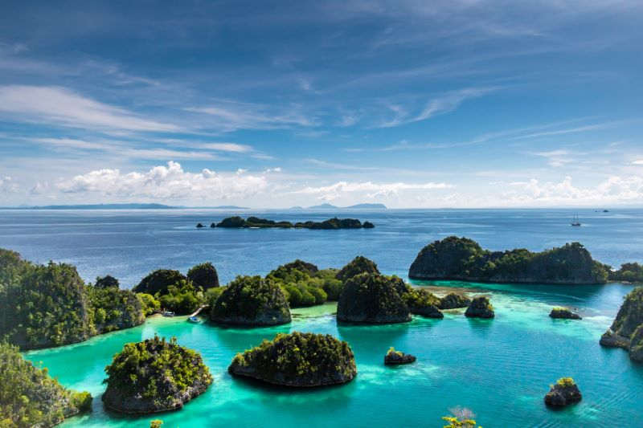
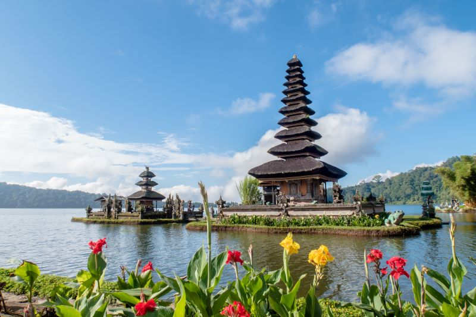
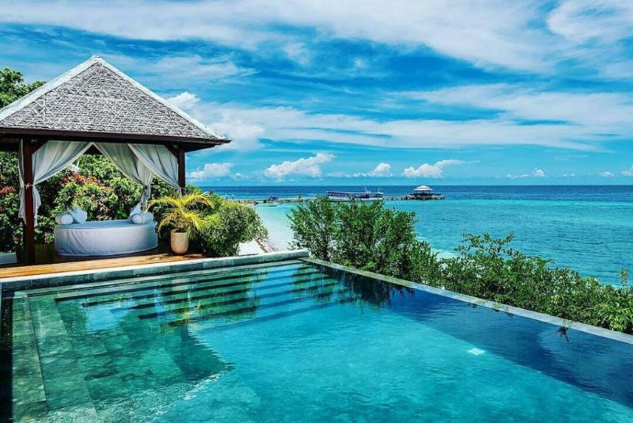
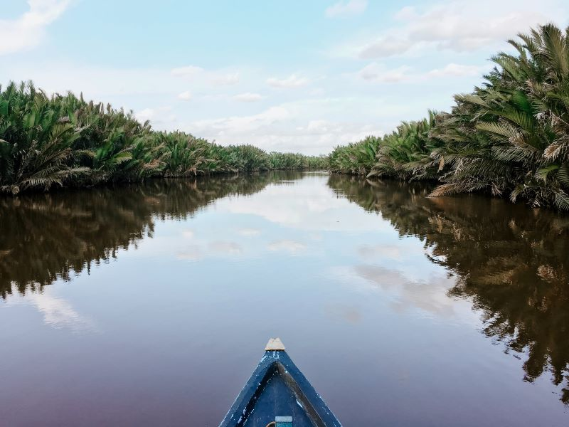
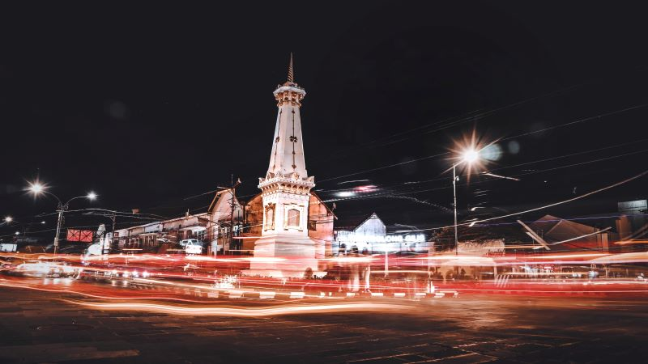

Raja Ampat

Secara umum, Raja Ampat adalah kepulauan yang terdiri dari banyak sekali pulau karang dan tersebar luas di seluruh wilayahnya. Namun demikian, Raja Ampat memiliki 4 pulau utama yang paling besar, yaitu Pulau Waigeo, Pulau Batanta, Pulau Salawati, dan Pulau Misool. Empat pulau besar inilah yang menjadi titik awal penyebaran seluruh penduduk Raja Ampat yang sebagian besar berprofesi sebagai nelayan. Wilayah perairan adalah daya tarik utama Raja Ampat, mengingat perairan Raja Ampat adalah salah satu dari 10 perairan terbaik di seluruh dunia. Hal ini didasarkan pada berbagai penelitian tentang kekayaan flora-fauna dan kelestarian alam laut yang dimiliki Raja Ampat.
Sebuah laporan badan konservasi internasional pernah menyebutkan bahwa perairan Raja Ampat memiliki sekitar 75% spesies laut seluruh dunia. Bahkan, wilayah laut dan darat Raja Ampat yang memiliki luas 4,6 juta hektar ini menjadi rumah bagi 540 jenis karang, 1.511 spesies ikan dan ribuan biota laut lainnya. Oleh karena itu, dengan berbagai keunggulan ini tidak heran apabila Raja Ampat saat ini dianggap sebagai surga bawah laut tercantik di seluruh dunia.
Bali

Bali adalah sebuah provinsi di Indonesia yang ibu kota provinsinya bernama Denpasar. Bali juga merupakan salah satu pulau di Kepulauan Nusa Tenggara. Di awal kemerdekaan Indonesia, pulau ini termasuk dalam Provinsi Sunda Kecil yang beribu kota di Singaraja, dan kini terbagi menjadi 3 provinsi: Bali, Nusa Tenggara Barat, dan Nusa Tenggara Timur.
Pulau Bali di Indonesia disukai karena alasan yang kuat. Hutan dengan kuil-kuil sakral, kota yang penuh dengan hiburan malam, ombak yang cocok untuk berselancar, serta pemandangan yang asri dapat menarik semua jenis wisatawan. Baik Anda berlibur selama tiga hari atau tiga minggu, mencari suasana pantai atau kekayaan budaya, jadwal Anda akan penuh dengan berbagai objek wisata dan tempat menarik tersembunyi di Bali.
Wakatobi

Wakatobi merupakan salah satu kabupaten di Provinsi Sulawesi Tenggara yang beribukota di Wangi-Wangi. Sejak tahun 1996, Wakatobi telah ditetapkan sebagai taman nasional Indonesia dan cagar alam dunia untuk biosfer laut oleh UNESCO. Nama Wakatobi merupakan akronim dari empat pulau utamanya yaitu WAngi-Wangi, KAledupa, TOmia, dan BInongko. Selain keempat pulau tersebut, terdapat beberapa pulau kecil lain yang berada di wilayah Wakatobi, antara lain Pulau Hoga, Kapota, Anano dan Rundumana. Selain dikenal sebagai surga para penyelam, Wakatobi juga memiliki destinasi wisata lain yang akan membuatmu terkesima
Kalimantan

Kalimantan atau yang sering di sebut "Borneo" adalah salah satu pulau yang terletak di Indonesia. Pulau ini merupakan pulau yang dikelilingi hutan hujan tropis. Banyak yang beranggapan bahwa di Kalimantan isinya hanya hutan melulu, hal tersebut tidaklah sepenuhnya benar dikarenakan Pulau Kalimantan punya banyak segudang pesona dan hal-hal unik yang jarang diketahui oleh masyarakat luar pulau Kalimantan.
Yogyakarta

Yogyakarta adalah daerah istimewa setingkat provinsi di Pulau Jawa, Indonesia. Uniknya, nama ibu kota provinsinya juga Yogyakarta. Bagi banyak orang Indonesia, Jogja adalah semacam kampung halaman kedua. Mungkin karena ratusan ribu orang pernah tinggal di sini bertahun-tahun ketika kuliah. Mungkin juga karena semua orang diterima seperti di rumah sendiri ketika di Yogyakarta.
Jogjakarta juga ramah backpacker. Konon tempat menginap paling murah di dunia itu ada di sini. Ada lho penginapan murah di Kota Jogja yang menyewakan kamar 50 ribu rupiah/malam sudah pakai AC dan TV. Tempat makan sekaligus tempat nongkrong yang merakyat juga mudah ditemukan di Yogyakarta, orang-orang menyebutnya angkringan. Daya tarik wisata Jogja lainnya adalah candi-candi berusia ribuan tahun, budaya, dan keindahan alam.